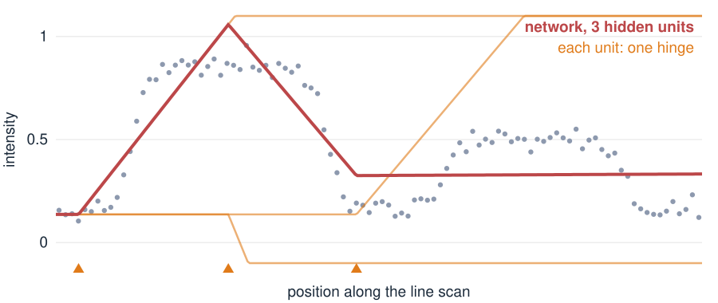

Check: (2, 1)\cdot(1, 2) = 4, the “no bend” answer.
2 or 100 layers with no bend in between are one matrix: a straight-line (linear) map.
The bend between the matrices is what lets a network draw curves.
Hinges add up to curves

A line scan across two nuclei. One input (position), three hidden units, one output.
Each hidden unit is a hinge: flat, then a straight rise (or the reverse), at its own position.
The output adds the hinges with weights: a bent line through the data.
More units → more hinges → any curve, as closely as we like.
Training: walk downhill on the error
How do we find the weights? Measure how wrong the network is (the loss, e.g. the mean squared error over the data), then nudge every weight a little in the direction that lowers it. Repeat thousands of times.
Picture the loss as a landscape over the weights: training walks downhill.
The learning rate is the step length: too small takes forever, too large overshoots to the other side of the valley.
The walk can stop in a dip that is not the deepest one: two trainings from different starts can give different networks.
The math: one gradient step
Step against the gradient: \mathbf w \leftarrow \mathbf w - \eta\, \nabla_{\mathbf w} L.
One weight, L(w) = (y - wx)^2 with x = 2, y = 3, start w = 0: L'(w) = -2x(y - wx), so L'(0) = -12. With \eta = 0.1: w \to 1.2, and L drops from 9 to 0.36.
Distance to the best w = 1.5 after one step: w_\text{new} - 1.5 = (1 - 8\eta)(w - 1.5). Converges for 0 < \eta < 0.25; \eta = 0.5 makes L grow to 81.
For a network, \nabla L comes from the chain rule applied layer by layer, from the output back to the input (backpropagation).
Try it: fit a line scan
Images are long vectors
A 28 \times 28 image is a vector in \mathbb R^{784}. A layer from the image to 192 hidden units has
784 \times 192 + 192 = 150{,}720 \text{ numbers.}
The networks in the next units have about 300,000 weights. Training adjusts all of them at once, with the same downhill steps.
Many weights need many training images (tens of thousands), or the network memorises instead of learning.
Weights have no meaning one by one: we judge a network by what it does.
Summary
Idea
In one line
Layer
matrix × vector + shift, then ReLU on each entry
No bend
stacked matrices collapse to one matrix: a linear map
Hidden unit
one hinge; hinges add up to curves
Loss
how wrong the network is, e.g. mean squared error
Training
step against the gradient, \mathbf w \leftarrow \mathbf w - \eta\nabla L, many times
Learning rate
step size: too small is slow, too large overshoots
Next: networks that squeeze an image into a few numbers and rebuild it, autoencoders.